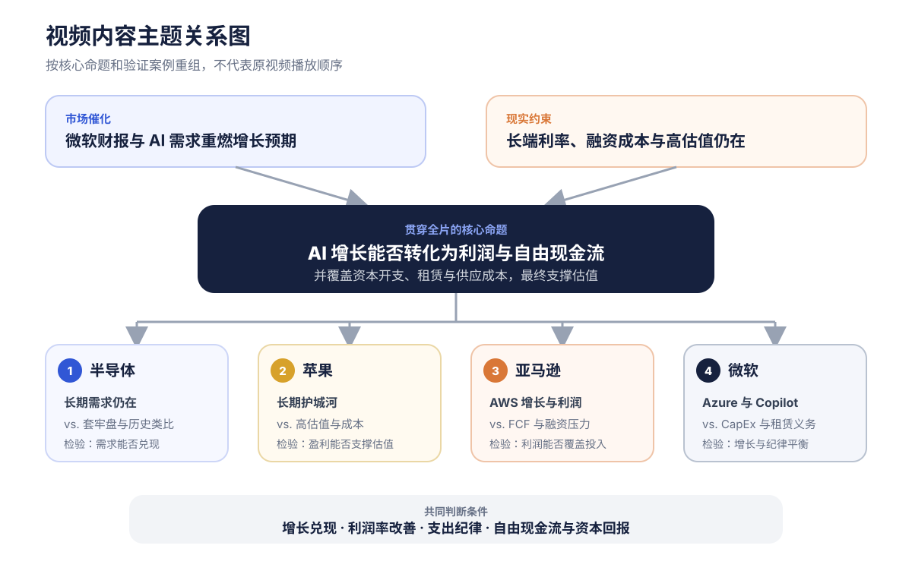
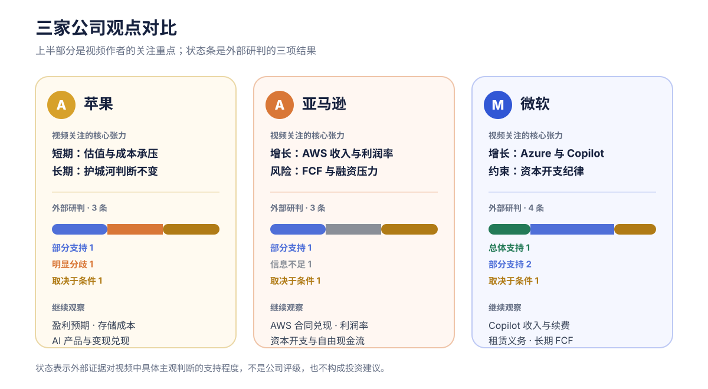
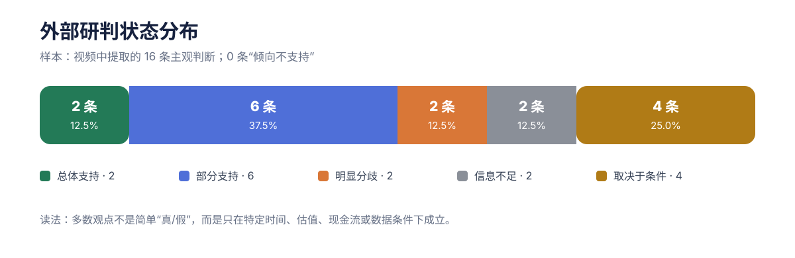
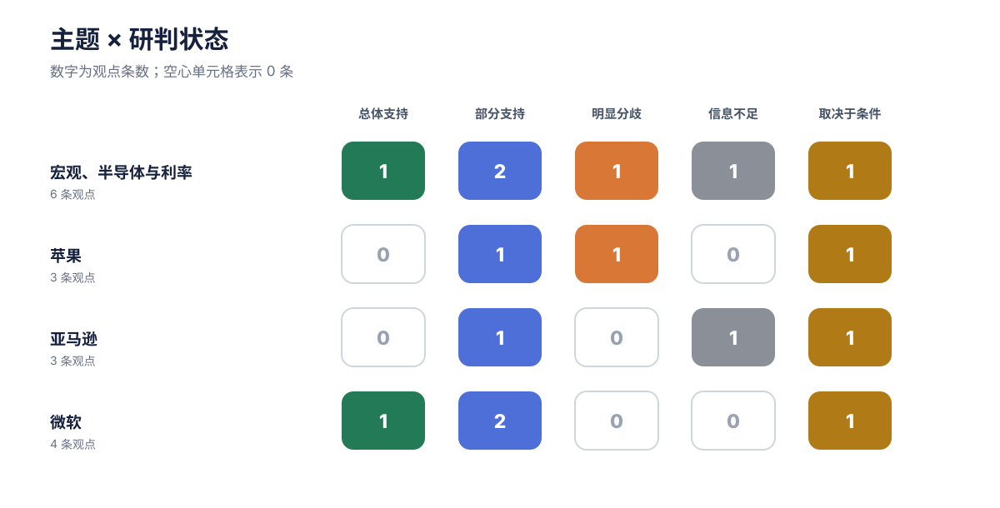

苹果｜短期与长期分开看
视频观点：约 35 倍前瞻市盈率在增长放缓、成本压力和防御溢价回落时可能承压；但作者的五到十年持有框架不变，并称盘后小幅补仓。
正文先忠实整理视频作者的表达；外部信源形成的独立研判单独展示，不代表视频作者观点，也不构成投资建议。
把视频中的市场、半导体和三家公司讨论重新组合后，可以提炼出一条贯穿全片的命题：微软财报让市场重新相信 AI 增长，但长端利率没有退场，因此增长最终仍要用利润、自由现金流和资本回报证明自己。 这也解释了为什么视频一面看好半导体长期需求，一面提醒短期交易压力；一面肯定 AWS、Azure 和 Copilot，一面反复检查资本开支、租赁义务和融资成本。

该图按内容逻辑重组视频，不表示原视频的播放顺序。时间戳只在正文中作为原声证据入口。
四个主题不是并列新闻，而是同一问题的不同测试：半导体检验长期需求是否会被短期交易压力打断；苹果检验护城河能否承受高估值与成本；亚马逊检验 AWS 利润能否覆盖投入；微软检验 AI 增长与开支纪律能否同时成立。
作者的判断链条可以进一步压缩成五步：需求和产品采用只是起点，最终仍要穿过收入、支出、现金流和估值。
苹果、亚马逊和微软面对的关键矛盾不同。图中的上半部分只概括视频作者的关注重点；状态条来自外部研判，不是股票评级。最值得比较的不是“谁更好”，而是每家公司的增长证据需要跨过什么成本与现金流门槛。

状态条统计每家公司对应的主观观点，不代表公司整体质量或预期回报。
视频观点：约 35 倍前瞻市盈率在增长放缓、成本压力和防御溢价回落时可能承压；但作者的五到十年持有框架不变，并称盘后小幅补仓。
视频观点：AWS 收入与利润率改善是最大亮点；同时，自由现金流、营运资金和未来融资成本决定高资本开支能否持续。
视频观点：Azure 再加速、Copilot 使用增长和经营杠杆构成正面证据；租赁分类变化不能被误读为经济投入下降。
本注为基于外部信源形成的独立研判，不代表视频作者观点。 外部研究只处理视频中的主观判断、预测、因果推断、价值判断和建议；它不会静默改写作者原意。
总体上，50% 的观点处于“部分支持”或“总体支持”，另有 25% 取决于明确条件。其余 25% 分别是明显分歧和信息不足。这里的重点不是给观点打分，而是标出哪些前提已经有证据、哪些仍需持续验证。

分母为 16 条主观观点；完整逐条映射见详细版和 report-data.json。
按主题拆开后，宏观与半导体的状态最分散，说明“财报修复”和“长期需求仍在”有数据支撑，但投资者行为、历史走势类比和政治归因仍存在证据缺口。微软的四条观点中有一条总体支持、两条部分支持，证据组合相对更完整。

矩阵按宏观与半导体、苹果、亚马逊、微软四个研究主题汇总；空心格表示 0 条。
本注为基于外部信源形成的独立研判，不代表视频作者观点。
当日科技股上涨而长端收益率仍高，支持“财报修复未解除利率压力”。但 SOX 与 2000 年的四个月线性类比缺少样本外检验；长端收益率也不能只归因于单一政治人物。
本注为基于外部信源形成的独立研判，不代表视频作者观点。
高估值、存储成本与供应约束会提高脆弱性；但当季收入、EPS、iPhone、Mac 和服务均增长，公开数据无法证明近期上涨主要来自防御资金。长期逻辑仍取决于产品、供货、定价与 AI 变现。
依据：Apple 财报、Apple 10-Q。
本注为基于外部信源形成的独立研判，不代表视频作者观点。
AWS 增长与利润支持继续投资，但应收变化不足以单独证明客户付款恶化。上行空间要同时满足合同兑现、利润率维持、资本开支纪律和现金流改善。
本注为基于外部信源形成的独立研判，不代表视频作者观点。
官方披露支持 Azure、云业务和租赁义务的方向性判断；Copilot 使用增长尚需进一步转化为续费、用量收入与净利润。长期奖励仍取决于利润率、自由现金流和资本回报。
本注为基于外部信源形成的独立研判，不代表视频作者观点。 与其追逐每次股价波动，更有用的是持续更新以下五个观察点：